Plot
El regreso de la " it girl " Serena van der Woodsen ( Blake Lively ) al Upper East Side es el eje central de la primera temporada. Envuelta en misterio y escándalo, la desaparición de Serena y su repentino regreso son anunciados por la omnisciente blogger Gossip Girl. La noticia llega a Blair Waldorf ( Leighton Meester ), cuya vida se desgarra cuando se revela el secreto detrás de la marcha de Serena: Serena se acostó con Nate Archibald ( Chace Crawford ), el chico de oro del Upper East Side y novio de Blair, la noche que ella se fue de la ciudad. Nate anuncia sus sentimientos por Serena varias veces y se producen una serie de batallas entre la ex reina abeja Serena y su heredero, Blair. Sin embargo, la grieta se resuelve con la reconciliación entre los dos y sigue una paz temporal. Mientras tanto, los hermanos Dan ( Penn Badgley ) y Jenny Humphrey ( Taylor Momsen ), residentes de Brooklyn, se sienten atraídos por la opulenta riqueza de sus compañeros de clase. La joven Jenny se convierte en la astuta protegida de Blair mientras Dan entabla una relación con Serena. Se revela que su relación se parece a la que tenían el padre de Dan, Rufus ( Matthew Settle ), y la madre de Serena, Lily ( Kelly Rutherford ), en su juventud.
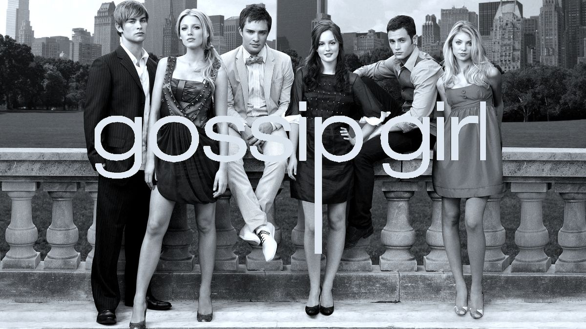
Personajes principales
Serena van der Woodsen
The It Girl
Interpretada por: Blake Lively
Serena es la figura central del Upper East Side, una joven que, a pesar de su apariencia perfecta y su popularidad inigualable, carga con un pasado lleno de misterios y decisiones cuestionables. Su personalidad magnética atrae a todos, pero su vida amorosa y amistades a menudo se ven envueltas en drama. A lo largo de la serie, Serena lucha por encontrar su verdadera identidad mientras intenta escapar de los errores de su pasado.
Blair Waldorf
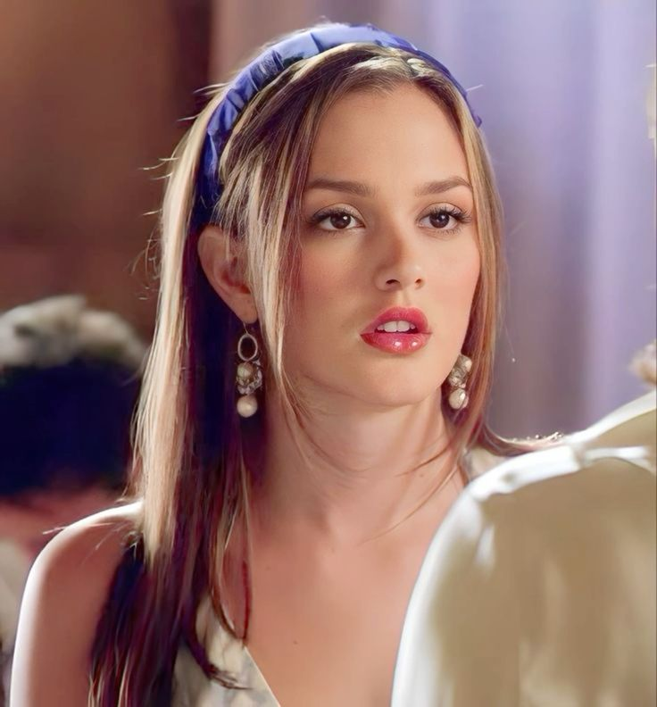
Interpretada por: Leighton Meester
Blair es la reina social del Upper East Side, una joven ambiciosa y decidida que anhela el control y la perfección en todos los aspectos de su vida. Es conocida por su agudo ingenio, su amor por la moda de alta costura, y su relación turbulenta con Serena, su mejor amiga y rival. Blair tiene una relación compleja con el amor, especialmente con Chuck Bass, y constantemente busca validar su lugar en la sociedad mientras lidia con sus propias inseguridades.
Chuck Bass
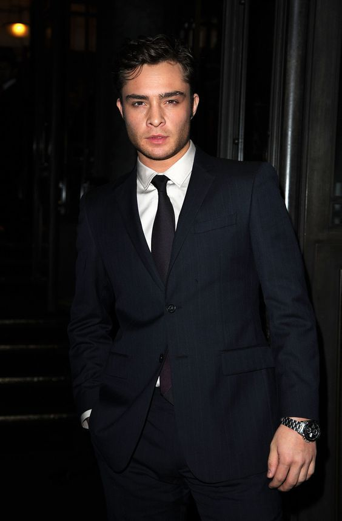
Interpretado por: Ed Westwick
Chuck es el enigmático chico malo del Upper East Side, conocido por su estilo extravagante y su naturaleza manipuladora. Heredero de un vasto imperio hotelero, Chuck lucha constantemente con los fantasmas de su pasado, incluyendo la complicada relación con su padre. Su conexión con Blair Waldorf es una de las piedras angulares de la serie, y su evolución a lo largo del tiempo revela un personaje que busca redención y amor, a pesar de sus muchas fallas.
Nate Archibald
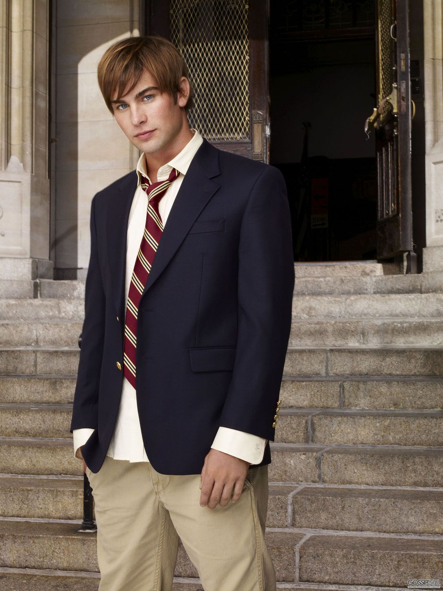
Interpretado por: Chace Crawford
Nate es el arquetipo del "golden boy" de Manhattan: apuesto, encantador y proveniente de una familia de prestigio. Sin embargo, detrás de su fachada perfecta, Nate enfrenta problemas familiares serios, como los escándalos financieros y la presión constante para seguir el camino que otros han trazado para él. A lo largo de la serie, Nate busca su independencia y trata de definir su vida lejos de las expectativas de su familia, explorando diferentes relaciones y carreras.
Dan Humphrey
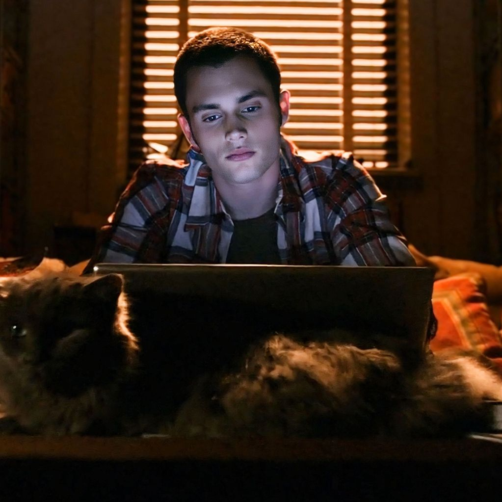
Interpretado por: Penn Badgley
Dan es el forastero de Brooklyn, un joven intelectual con una pasión por la escritura que se encuentra en un mundo ajeno al suyo cuando se enamora de Serena. Su perspectiva cínica y moralmente recta a menudo lo pone en conflicto con la élite de Manhattan, pero su amor por Serena lo impulsa a involucrarse más en ese mundo. A lo largo de la serie, Dan lucha con su identidad, sus principios, y su deseo de ser reconocido tanto como escritor como persona en este entorno elitista.
Vanessa Abrams
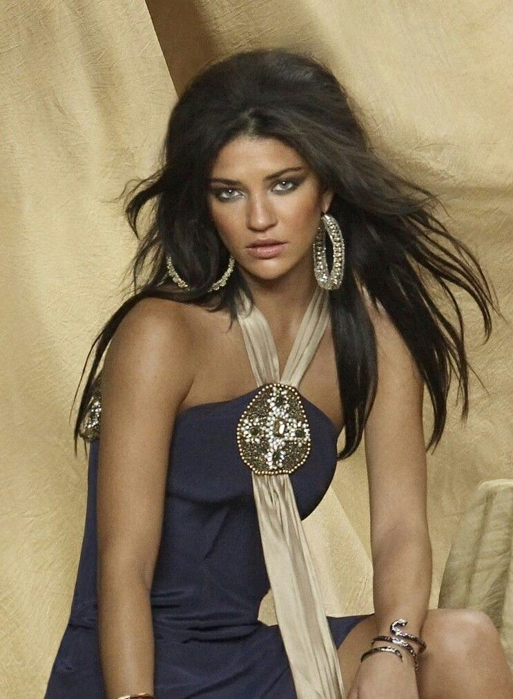
Interpretada por: Jessica Szohr
Vanessa es la amiga de la infancia de Dan y una ferviente crítica del mundo superficial del Upper East Side. Criada en Brooklyn, Vanessa es independiente, creativa y profundamente ética, lo que la pone en desacuerdo con la élite de Manhattan. A pesar de sus convicciones, su amistad con Dan la lleva a involucrarse más en el drama del Upper East Side, y sus propias aspiraciones artísticas y románticas la enfrentan a dilemas morales y personales a lo largo de la serie.
Jenny Humphrey
Interpretada por: Taylor Momsen
Jenny, la hermana menor de Dan, es una joven ambiciosa con un talento innato para la moda. Aunque al principio es ingenua y deseosa de encajar en el mundo glamuroso del Upper East Side, Jenny rápidamente aprende las duras realidades de lo que implica alcanzar el estatus social que desea. Su transformación de una chica dulce de Brooklyn a una manipuladora reina social refleja su lucha interna entre mantenerse fiel a sí misma o sucumbir a la corrupción del poder y la fama.
Georgina Sparks
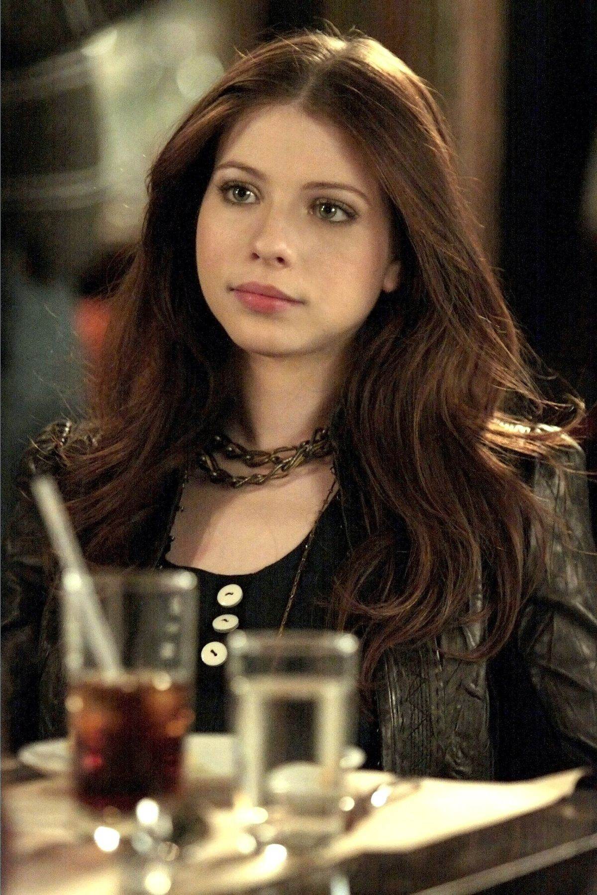
Interpretada por: Michelle Trachtenberg
Georgina es la encarnación del caos y la manipulación, una figura del pasado de Serena que reaparece en sus vidas para causar estragos. Conocida por su naturaleza impredecible y sus oscuros secretos, Georgina es una maestra del engaño que disfruta manipulando a los demás para su propio beneficio. Su presencia en la serie siempre trae drama y tensión, y es una antagonista que desafía constantemente a los personajes principales con sus intrigas.
Moda en Gossip Girl
La moda en "Gossip Girl" se convirtió en un personaje más de la serie, reflejando el lujo y el glamour del Upper East Side de Nueva York. Cada personaje tenía un estilo único que se volvía emblemático, como los conjuntos sofisticados y elegantes de Blair Waldorf, con su predilección por las diademas y los looks preppy, o los atuendos bohemios y desenfadados de Serena van der Woodsen, que mezclaban piezas de alta costura con toques más casuales. La serie no solo dictó tendencias, sino que también influyó en la moda juvenil de la época, con diseños de marcas icónicas como Chanel, Valentino, y Ralph Lauren que se convirtieron en sueños aspiracionales para los fans. Desde las pasarelas hasta las calles, "Gossip Girl" consolidó su legado como una fuente de inspiración para la moda, donde cada episodio era un desfile de estilo y sofisticación.
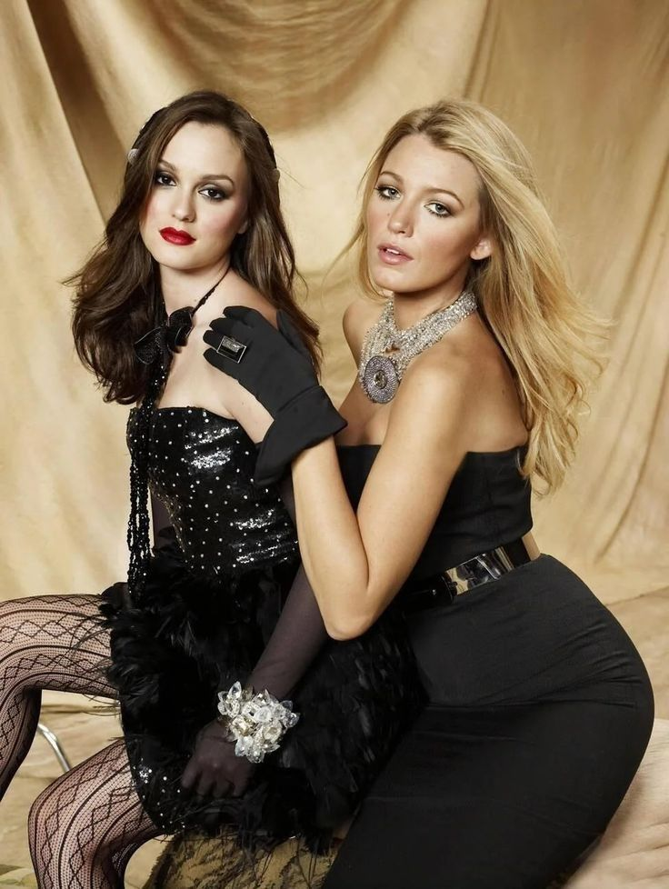

Temporadas de Gossip Girl
Temporada 1
La primera temporada de "Gossip Girl" establece el escenario del glamoroso y traicionero mundo del Upper East Side de Nueva York. Serena van der Woodsen, una de las adolescentes más populares y enigmáticas, regresa repentinamente a la ciudad tras una misteriosa ausencia. Su llegada causa un gran revuelo entre su círculo de amigos, especialmente en Blair Waldorf, su mejor amiga y reina indiscutible de la escuela, que se siente amenazada por la vuelta de Serena. A medida que los secretos comienzan a salir a la luz, se forman nuevas amistades y amores, pero también se gestan rivalidades peligrosas. Gossip Girl, una bloguera anónima, mantiene a todos en vilo con sus publicaciones escandalosas que exponen las vidas privadas de los jóvenes ricos. La temporada sigue explorando el conflicto entre el deseo de mantener la apariencia de perfección y el riesgo constante de que los secretos más oscuros sean revelados.
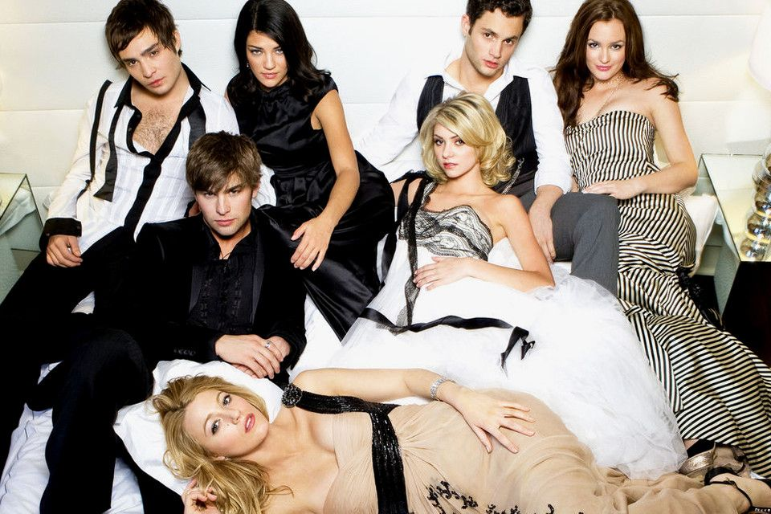
Temporada 2
En la segunda temporada, el drama se intensifica con la llegada del último año de secundaria, un momento crucial en la vida de los adolescentes del Upper East Side. Serena y Dan enfrentan altibajos en su relación, mientras los problemas personales de Serena se vuelven más notorios y complican su vida amorosa. Blair, por otro lado, se esfuerza por mantener su estatus como la "reina de Constance Billard" mientras compite por un lugar en la prestigiosa Universidad de Yale, su sueño más preciado. Chuck Bass lucha con la pérdida de su padre y se enfrenta a su propia identidad, mientras que Nate Archibald explora nuevas relaciones que desafían las expectativas de su familia. La temporada también introduce nuevos personajes que sacuden la dinámica del grupo. Los personajes navegan por la presión social y sus dilemas personales, intentando descubrir quiénes son realmente mientras enfrentan las expectativas de sus familias y de la sociedad.
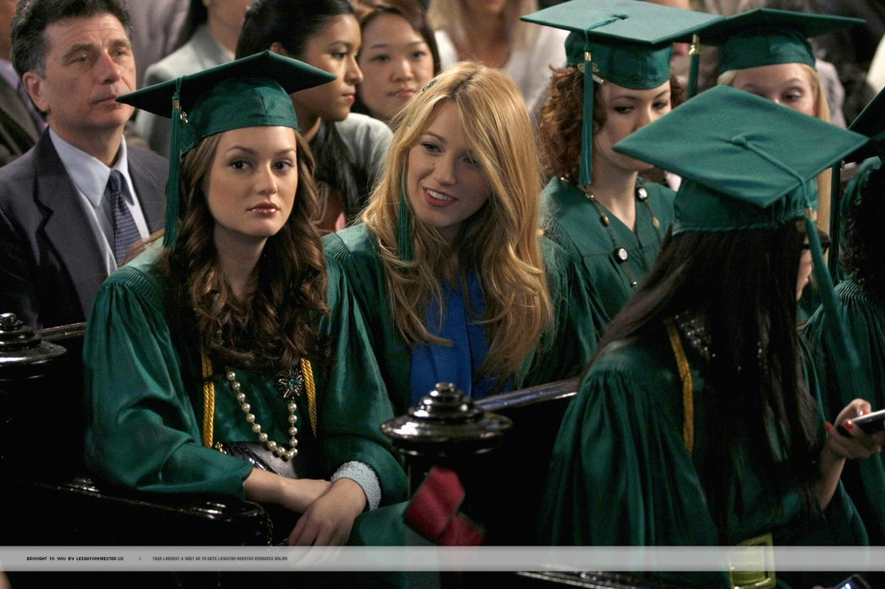
Temporada 3
La tercera temporada sigue a los personajes mientras hacen la transición de la escuela secundaria a la universidad, enfrentando nuevos desafíos tanto académicos como personales. Blair y Serena descubren que la universidad no es exactamente como lo imaginaban, especialmente cuando las tensiones entre ellas crecen como compañeras de cuarto. Chuck Bass, que ahora es dueño del Hotel Empire, intenta expandir su negocio mientras enfrenta problemas familiares y personales que ponen a prueba su relación con Blair. Dan Humphrey se adapta a la vida universitaria en NYU mientras lidia con su atracción por Vanessa y su complicada amistad con Serena. La llegada de nuevos personajes y enemigos introduce una nueva ola de conflictos y alianzas, poniendo a prueba las lealtades y relaciones de todos. A medida que los personajes buscan su independencia y exploran nuevas oportunidades, se ven obligados a lidiar con las repercusiones de sus decisiones pasadas y presentes, en una constante búsqueda de quiénes quieren llegar a ser.
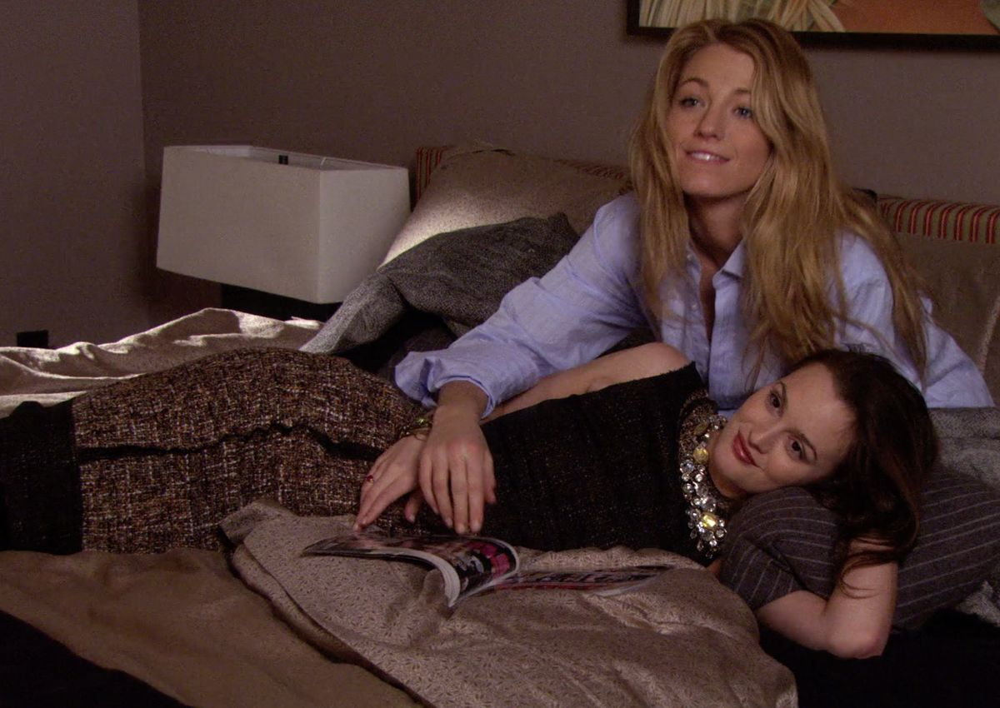
Temporada 4
La cuarta temporada comienza con una espectacular escapada a París, donde Blair y Serena intentan dejar atrás el tumulto emocional de la temporada anterior y reinventarse. Sin embargo, al regresar a Nueva York, se encuentran rápidamente atrapadas en nuevas redes de intriga y traición. Blair lucha por hacer realidad sus sueños profesionales en el mundo de la moda y la alta sociedad, mientras Serena se encuentra atrapada entre dos amores, lo que complica aún más su vida ya caótica. Chuck, que también regresa con una nueva actitud después de un verano de redescubrimiento, enfrenta una serie de desafíos que amenazan con destruir todo lo que ha construido. Esta temporada explora la complejidad de las relaciones personales y profesionales, con Gossip Girl siempre al acecho para desvelar cualquier secreto. Nuevos personajes y viejos enemigos regresan, llevando el drama a un nivel completamente nuevo mientras cada personaje intenta encontrar su verdadero camino.
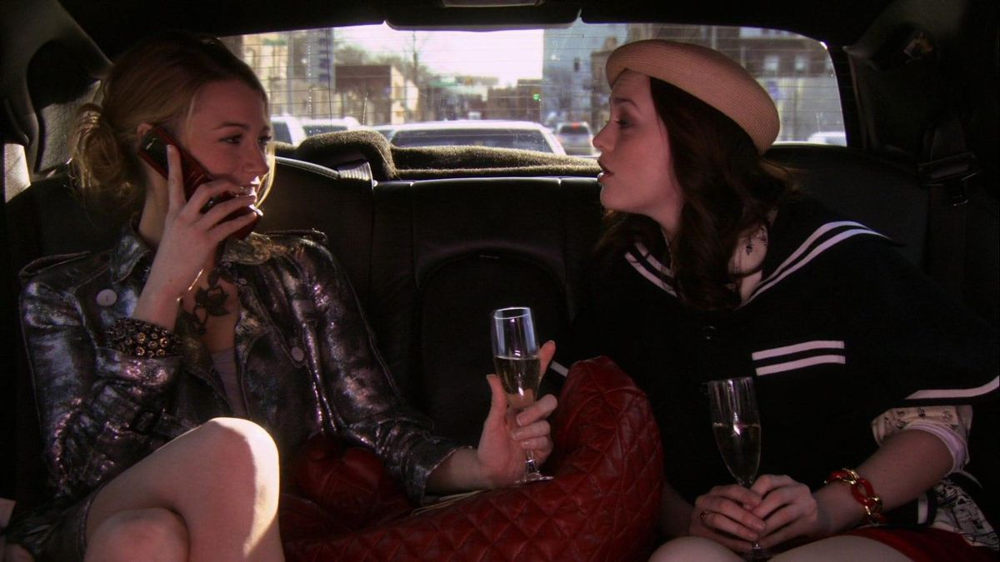
Temporada 5
En la quinta temporada, los personajes de "Gossip Girl" se enfrentan a cambios fundamentales en sus vidas. Blair, ahora comprometida con el príncipe Louis de Mónaco, se encuentra atrapada en un triángulo amoroso con Chuck y Dan, mientras lucha con las expectativas reales y los deseos de su propio corazón. Serena intenta forjar una carrera en la industria cinematográfica, pero se ve envuelta en una serie de escándalos y dilemas éticos que amenazan con destruir su reputación. Chuck busca redención y lucha por cambiar su vida después de una serie de eventos traumáticos, mientras Dan publica un libro que revela secretos devastadores sobre sus amigos, sacudiendo las bases de su círculo social. La temporada explora la complejidad de las elecciones personales y el precio de la fama y el éxito, mientras los personajes luchan por encontrar su lugar en el mundo y reconciliar su pasado con su futuro.
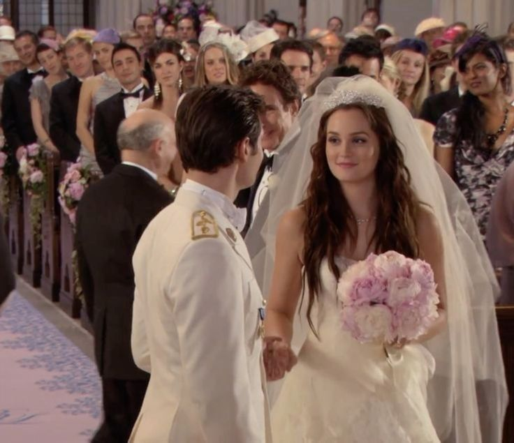
Temporada final
La sexta y última temporada de "Gossip Girl" reúne todos los hilos de la narrativa en un clímax cargado de emoción. Los personajes principales regresan a sus raíces en Nueva York y se enfrentan a los fantasmas del pasado mientras intentan forjar un futuro a su manera. Blair y Chuck están más cerca de un final feliz, pero enfrentan obstáculos significativos que ponen a prueba su amor una vez más. Serena, por otro lado, se encuentra en un momento de autodescubrimiento, tratando de comprender quién es realmente sin la influencia constante de la sociedad y los chismes. Dan, ahora más consciente del poder y el daño de su pluma, lucha con las repercusiones de su libro y su relación con Serena. La temporada culmina con un episodio final donde se revela la verdadera identidad de Gossip Girl, un momento largamente esperado que cierra el círculo de intrigas y secretos, dejando a los personajes y a los fans con una sensación de cierre y nuevas posibilidades.
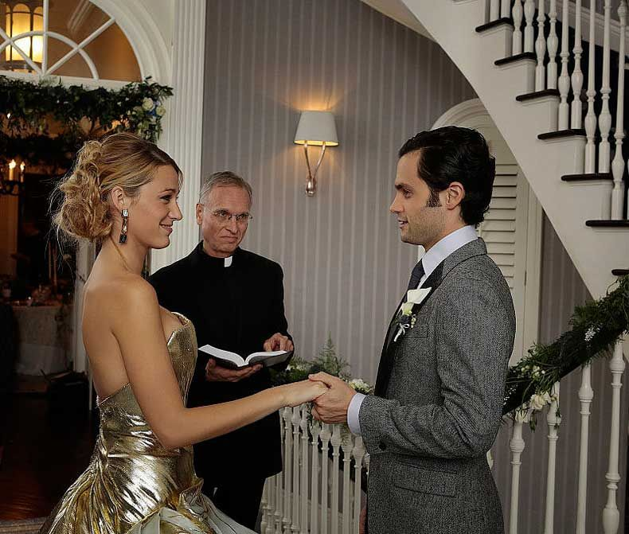